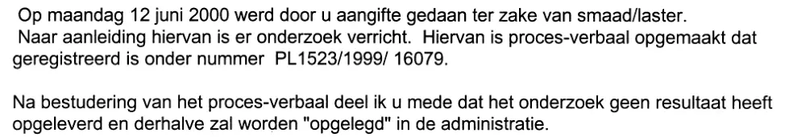

Prueba · Carta
Policía de Haaglanden a Giltay, tramitación de la denuncia, 19 de septiembre de 2000
El pasaje
«El lunes 12 de junio de 2000 presentó usted una denuncia por difamación/calumnia. A raíz de esta, se ha llevado a cabo una investigación. Se ha levantado acta de ella, registrada con el número PL1523/1999/ 16079. Tras el estudio del acta, le comunico que la investigación no ha dado ningún resultado y que, por consiguiente, será “archivada” en los registros». Página 1, los dos primeros párrafos de la carta. Traducido del neerlandés; el texto original figura a continuación.
Texto original
“Op maandag 12 juni 2000 werd door u aangifte gedaan ter zake van smaad/laster. Naar aanleiding hiervan is er onderzoek verricht. Hiervan is proces-verbaal opgemaakt dat geregistreerd is onder nummer PL1523/1999/ 16079. Na bestudering van het proces-verbaal deel ik u mede dat het onderzoek geen resultaat heeft opgeleverd en derhalve zal worden “opgelegd” in de administratie.” Las líneas de la imagen escaneada se han unido aquí. Las comillas en torno a «opgelegd» (archivada) figuran en la propia carta. En el cuerpo del texto, el número del acta lleva un espacio después de la segunda barra; el membrete escribe la referencia sin espacio.

Por qué importa este documento
Con esta carta del 19 de septiembre de 2000 se cerró la tramitación de la denuncia por difamación y calumnia que Giltay había presentado el 12 de junio de 2000. La carta está escrita en papel con membrete de la Policía de Haaglanden y está firmada, en nombre del fiscal, por un agente auxiliar del fiscal (hulpofficier van justitie), inspector de policía. Este comunica que la investigación no ha dado ningún resultado y que será «archivada» en los registros. La carta no dice por qué no dio resultado. Tampoco indica contra quién se dirigía la denuncia; según la propia denuncia, se trataba de Barbara Overduyn, antigua empleada del servicio de inteligencia militar.
En julio de 1999, la policía se había negado en un primer momento a registrar la denuncia, algo por lo que el jefe de distrito pidió disculpas en marzo de 2000. Poco más de tres semanas después de esta carta, el 14 de octubre de 2000, Giltay sometió el asunto a la reina Beatriz. La propia carta señala la vía de la queja ante el Tribunal de Apelación prevista en el artículo 12 del Código de Procedimiento Penal neerlandés. Giltay siguió también ese camino: el 7 de marzo de 2001, su queja por no haberse ejercido la acción penal contra Overduyn llegó al Tribunal de Apelación de La Haya, que la desestimó el 19 de diciembre de 2002.
Procedencia
- Documento
- Carta, una página, en papel con membrete de la Policía de Haaglanden
- Remitente
- Policía de Haaglanden, unidad Den Haag/Haagse Hout-Scheveningen, Nieuwe Parklaan 250, La Haya
- Destinatario
- E.W. Giltay, ’s-Gravenhage (La Haya); las iniciales son a todas luces un error por E.F.
- Fecha
- 19 de septiembre de 2000
- Referencia
- PL1523/1999/16079
- Asunto
- «afhandeling aangifte» (tramitación de la denuncia)
- Referencias
- La denuncia de Giltay del 12 de junio de 2000; el acta lleva el mismo número que la referencia
- Firmado
- En nombre del fiscal, por el agente auxiliar del fiscal, inspector de la Policía de Haaglanden A. Teiwes; la firma está tachada en el PDF, salvo donde pasa por encima de las líneas impresas
- Resultado
- Según la carta, la investigación no ha dado ningún resultado y será «opgelegd» (archivada) en los registros; la carta no da ninguna motivación
- Queja
- La carta señala la vía de la queja ante el Tribunal de Apelación de La Haya prevista en el artículo 12 del Código de Procedimiento Penal neerlandés
- Idioma
- Neerlandés
- Conservado por
- Archivo del autor
- Véase también
- Jefe de distrito de la policía a Giltay, 26 de marzo de 2000Denuncia ante la policía de La Haya, 12 de junio de 2000Gabinete de la Reina a Giltay, 31 de octubre de 2000Tribunal de Apelación de La Haya, auto sobre la queja del artículo 12, 19 de diciembre de 2002
Citado en: el ensayo «La prohibición cayó, el libro quedó en pie» en el capítulo (3) «Lo que revela el libro: el encubrimiento en torno a Srebrenica» y en la diapositiva «Gabinete de la Reina · 2000» de la presentación «La historia en el mapa».
Ficha de prueba: https://
Documento: https://
Modificado por última vez el 9 de octubre de 2026, consultado el 27 de noviembre de 2026.

Esta página es una ficha de prueba del libro El general del encubrimiento de Edwin Giltay y del sitio web que lo acompaña.